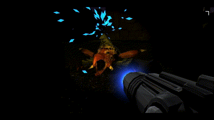

Metroid Survive
Crafted with Unity Game Engine and C#: Unveiling My First-Person Shooter Masterpiece to Showcase Design and Development Expertise

At the genesis of this project, I embarked on an exciting journey by laying the foundation with a versatile weapon swapping system. This system serves as the cornerstone of player interaction and a nod to Metroid Prime, granting players access to an arsenal of four distinct weapon types all used by Samus Aron during her time on Tallon IV, each boasting unique ranges, effects, and damage calculations.
Driven by the desire to heighten the game's intensity, I recognized the need to infuse a sense of urgency into the gameplay. To achieve this, I ingeniously devised a dynamic flashlight mechanic that gradually dwindles over time, accompanied by strategically placed power-ups to recharge the flashlight scattered throughout the map. Additionally, I implemented a robust ammo system tailored to each distinct weapon style, adding depth and strategy to the player's arsenal.

In my pursuit of a truly immersive gameplay experience, I introduced impactful features that resonate with players, heightening their engagement and providing valuable feedback. Two such additions include a visor breakage system upon taking damage and a thoughtful death screen that informs the player of their demise while offering a seamless level restart option.